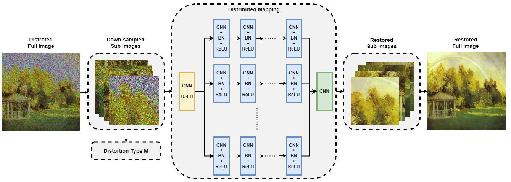
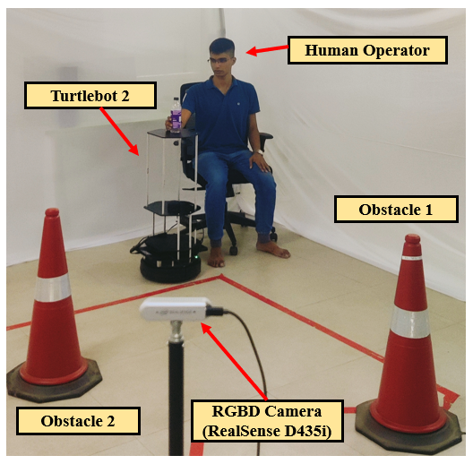
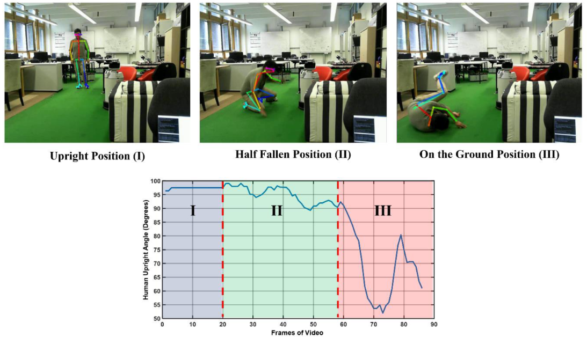
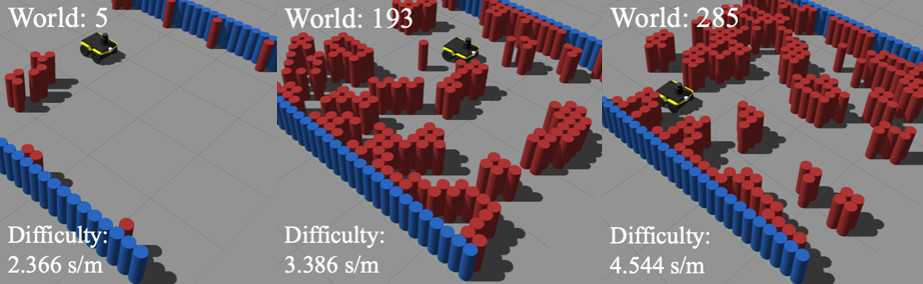
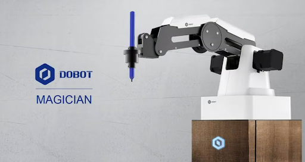
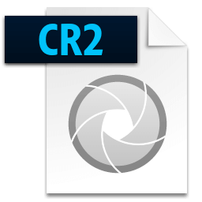

PATENT
Brain-Computer Interface-based Sound Source Localization for Attending tasks in an Industrial environment via Human-Robot Interaction (Application Number: 202341087196)
Embodiments of the disclosure relate to a Brain-Robot Interface framework using Auditory Steady State Response (ASSR) for audio-aware navigation of mobile robot in industrial environments.

PUBLICATIONS
Transforming Pixels into a Masterpiece: AI-Powered Art Restoration using a Novel Distributed Denoising CNN (DDCNN) (Paper Presented at - IEEE International Conference on Emerging Techniques in Computational Intelligence (ICETCI) 2023 )
The work presents a creation of diverse dataset of deteriorated art images with various degradation levels and a CNN-based approach to restore intricate details in the art.

Advancing Assistive Robotics: Enhancing Robot Navigation through Activity Recognition (Poster accepted at - IEEE International Conference on Intelligent Robots and Systems (IROS) 2023 )
The work aims at the development of a reliable human activity recognition system driven through spatio-temporal feature extraction of human pose using human pose estimator model.

Unlocking the Secrets of Gesture-based Communication: A Feature Extraction Technique for Accurate Recognition of Human Activities in Socially Assistive Scenarios (Presented at - ACM Advances In Robotics (AIR) 2023)
The work aims at the development of a reliable human activity recognition system driven through spatio-temporal feature extraction of human pose using human pose estimator model.

PROJECTS
Waypoint tracking controller of quadrotor
Developed and evaluated waypoint tracking controller for quadrotor using potential field constraints in Model Predictive Control (MPC), as a part of a Planning & Decision-Making course project.
Benchmark Autonomous Robot Navigation (BARN) Challenge
The objective is to develope a navigation algorithm to manoeuvre a non-holonomic mobile robot in 300 increasing levels of highly cluttered obstacle configurations.

Strawberry Stacker
The objective is to build a multi-drone system for picking strawberry boxes from a field and stacking them onto a transport trailer. A total of 6 incremental tasks starting from the installation to the final solution to the problem are detailed here.

Feature Extraction of ECG Signal for Emotion Detection
The objective is to extract features in temporal, spectral and non-linear domain of ECG signals for unimodal emotion detection.

Indoor Obstacles Dection in Horizon POV
The objective is to build a deep learning based object detection model for detecting indoor obstacles in cleaning robot's point of view.

Industrial Mobile Manipulation Challenge
The objective is to perform a pick and place operation of a wheeled mobile robot in an industrial setup.

Automatic UV-C Sanitizer for Grab Handles
The objective is to build a model to prevent the spread of infection via the commonly touched surface by automating the sanitization process using Far UV-C radiation.
Smart Switch: IoT- based home automation
The objective is to developed a solution to automate household switches using a timer-based socket breaking system.

Dual Powered Multi-purpose Emergency Kit with HAM Radio Receiver
The objective is to develope a solar and hand-crank powered multiplexer-based 144 MHz HAM radio receiver.

Piezo Electric Shoe
The work aims to demonstrate a Proof of Concept (PoC) of using piezo electric sensor to cultivate electrical energy from footsteps.

DEMONSTRATIONS
Dobot Magician Experiments
Demonstration on fundamental experiments and documentation of Dobot Magician.

Turtlebot2 Experiments
Demonstration on fundamental experiments and documentation of Turtlebot2.

OPEN-SOURCE TOOLS
ROS bag plotter MATLAB
A tool to visualize ROS bag signals in MATLAB.

Arduino library for Ultrasonic Sensor (HC-SR04)
An Arduino library to compute proximity information for HC-SR04.
.png)
CR2-Deleter
Manually selecting and moving only. CR2 images (Canon's RAW images) to another folder can be tedious. This code provides a simple window to move and delete the RAW images within few clicks.
